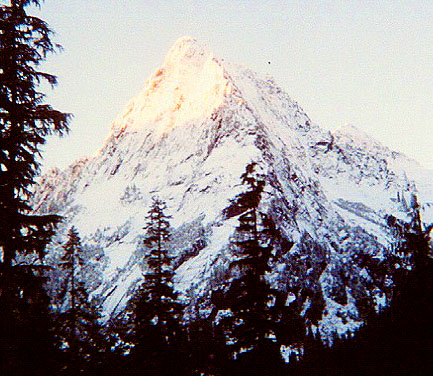
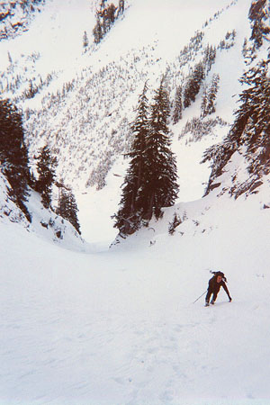
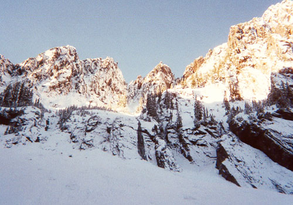
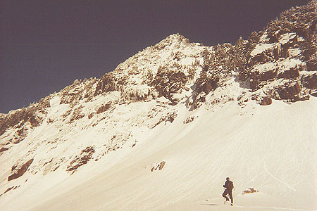
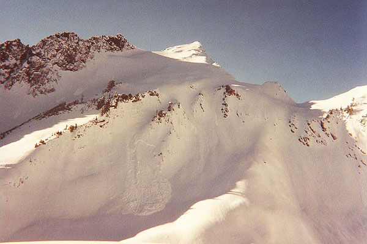
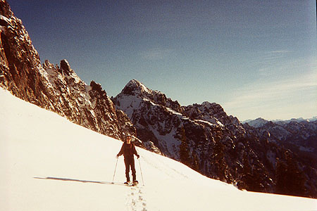

Sperry Peak
January 6, 2001
Jake had emailed me, saying he wanted to do a trip this weekend. By the time Thursday rolled around, I was pretty excited about going out. Some pressing bugs at work kept my enthusiasm low until Friday, when answers came at the last minute. I talked to Peter, who had plans to climb Bandera with Kim. I was ready for a slugfest though, so eagerly signed on to Chris and Jake’s idea for Sperry Peak. (as it turns out, Peter and Kim had a bushwhacking slugfest of their own!).
It was great to finally climb with Chris K., who is very strong and experienced. His tale of a grueling three day trip to Mt. Challenger last summer fired Jake and I up for an attempt this year. July of 2001? They picked me up at 6 am, and we began walking up the Sunrise Mine road at 7:45 am. Right away, Chris took off in his trademark long strides. How am I gonna keep up with this guy?






The day was beautiful – high pressure, no clouds, crisp alpine vistas of Big Four Mountain and Del Campo peak as we hiked the road. Soon we entered a cramped forest trail, hopping around on slick roots and little streams. We emerged in a clearing where two rivers converged. After two awkward crossings, we traversed a brushy slope to gain Wirtz Basin below Headlee Pass. The traverse was tiring, with rotten holes in the snow, thin avalanche gullies, and deep rocky creekbeds. We emerged above the Basin, looking hopefully down sheer cliffs to the basin floor, some 300 to 500 feet below. After going up and down these cliffs and contemplating down-climbing, we did the right thing and hiked back, down and around to enter the basin at the only logical place.
Gamely, we kept going. Although one of Chris’s snowshoes broke here, and he spent the rest of the day with one snowshoe on. At the same time, he kicked steps out in front all day too! Jake and I pleaded “Please, take one of our snowshoes, it’s bad enough that you are wasting us, don’t humiliate us too!!” But he seemed to take a secret delight in doing without. I imagined myself with a dunce cap and toiled on.
But what a great place to toil! Morning Star is ahead and to the left, while Sperry practically seethes above us on the right. It’s flanks steamed with runnels of melting ice, and an unnaturally blue sky above the craggy summits seemed to add elevation and seriousness. The routes on the east face were all hard, and didn’t interest us today. Instead, we made an abrupt right turn before the basin headed out in cliffs. I’d heard much about the steep slopes to Headlee Pass, but it wasn’t as steep as I’d thought. The snow was good, aside from a 50 foot section of thin cover over a hard, icy crust. Chris broke most of the way, although I did get an exhausting turn on the endless slope. I also got some good advice from Chris, who recommended really stamping the snow down with each kick step. I wasn’t doing this, so every now and then a step would collapse, putting me about 3 feet below a previous step! Attempts to extract myself just dug me deeper into a hole. I’ll remember this. Chris never had that problem.
We were in the sun for the first time on the other side, and I led the way up to a level area looking down on Lake Elan in the saddle between Vesper and Sperry Peaks. The elevation was around 5000 feet. We debated the route from here. Sperry rose up in a wall with minor gullies, and little ice chunks constantly came down as it baked in the sun. Jake was keen to try a gully that appeared to level off a few hundred feet above. Chris and I were worried that it wouldn’t level off much, and then we’d have a maze of gullies for upward progress. Finally, we dropped a bit closer to the lake and continued around it some distance to ascend steeply left of a wide colouir. Halfway up this I couldn’t ignore all the warning lights in my head anymore, so I turned around, going back to the level area to wait. I wasn’t unhappy with this decision because 1) it was after 2:00 pm, 2) we needed daylight to navigate below Wirtz Basin, 3) I was tired, 4) the hot sun and melting slope gave me the jitters, and 5) I was tired, did I say that?
I wished Chris and Jake luck, watching them with binoculars as they made slow but steady progress several hundred feet higher. They came to a level area before the summit, had a good look around, then started back. I was surprised, but it was a good decision based on the time. In order to help us along now, I decided to get a head start, and hopefully find and pioneer the trail we had lost at the basin head before dark. If I could do it before dark, they could follow my snowshoe tracks even if they came considerably later.
Getting down to Headlee Pass took me through the most frustrating snowshoe conditions I’d ever seen. The now-saturated upper layer of snow slid easily on the rain crust, leaving me slipping and off-balance most of the way. I was glad to get out of the sun at the Pass, and began retracing our steps down, facing in at first, but soon finding conditions suitable for a glissade. After several fun slides, I snowshoed down the basin, stopping often to listen for Jake and Chris hopefully not far behind. At the head of the basin, I finally saw them behind me, as tiny black specs sliding down from the Pass. Good.
It didn’t take long to find the clever forest trail we had missed. When we were in shouting distance, I started down, and soon we were together again on the brushy slope fighting to get down before full dark. Jake picked some good landmarks to make for. A large boulder and a short forest path led us to our river crossings. From here, I raced along our barely-visible tracks from the morning, reaching the snowfree forest path just at full dark…not a minute to spare! We shuddered at the thought of trackless nighttime wanderings through the brushy forest here. Headlamps got us back to the road, where the moonlight accompanied us the rest of the way.
Thanks to Jake and Chris for an excellent winter mountain trip! We’ll be back for the summit.